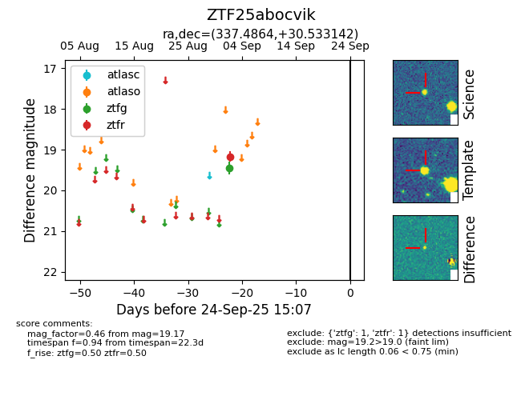

FINK: ZTF25abocvik
Lasair: ZTF25abocvik
ALeRCE: ZTF25abocvik
ZTF25abocvik (ztf,fink)
equatorial (ra, dec) = (337.4864,+30.53314)
galactic (l, b) = (90.0875,-23.16695)

last ztfg=19.46, ztfr=19.17
1 ztfg, 1 ztfr detections